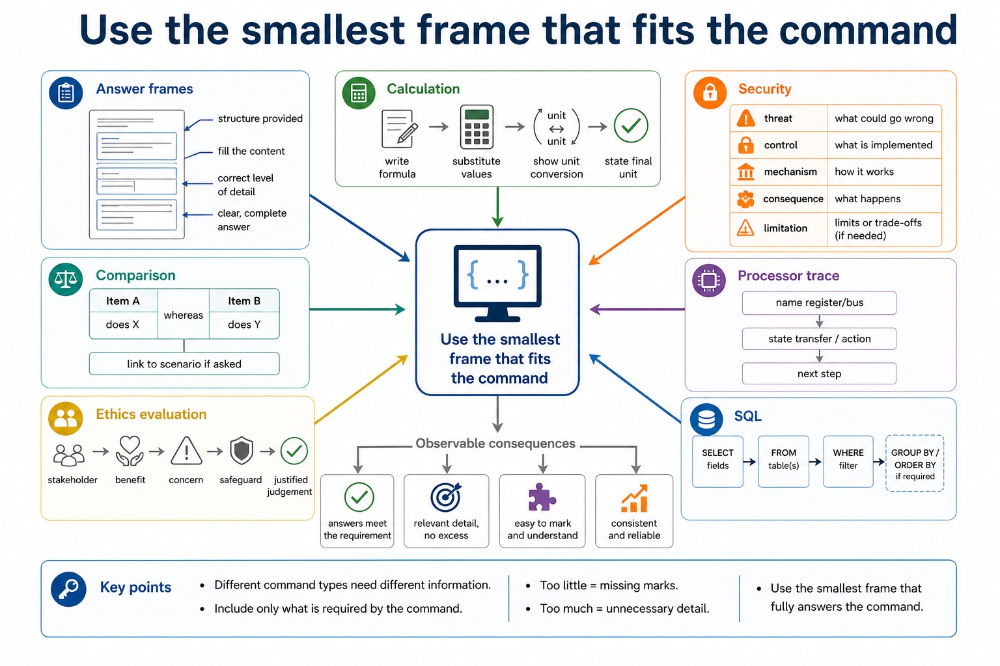
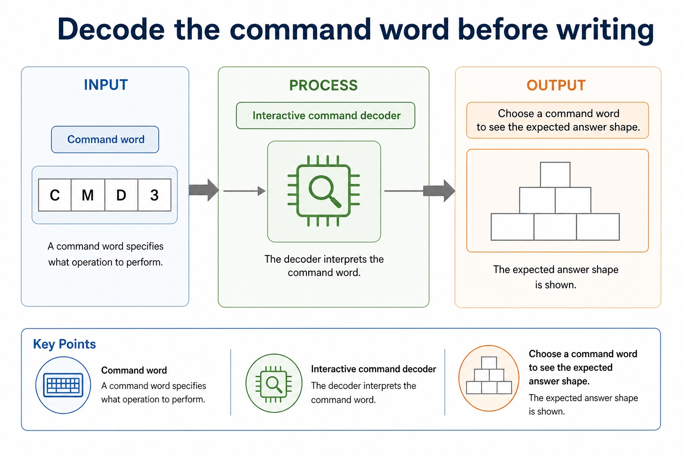

Mixed questions are not random. They are organised chaos with mark schemes.
This lesson trains the strategy for Paper 1 mixed questions. You will classify the syllabus area,
read the command word, choose the method, and write answers with mechanism, context and consequence.
The content spans representation, communication, hardware, processor fundamentals, system software,
security, ethics and databases.
Classifyuse clues to identify which Paper 1 section is being tested
Decodematch command words to the expected answer shape
Constructwrite concise mark-worthy responses under mixed-topic pressure
Lesson fact: prevents writing paragraphs when a method/result is needed
Command words
What each command word usually demands
Command
Answer shape
Weak answer pattern
State / identify
one precise term or value
writing a paragraph and hiding the answer
Describe
what happens or what it is
saying only why it is useful
Explain
cause plus consequence, usually with because/so that
listing a keyword without mechanism
Compare
paired differences using both items
two isolated descriptions with no contrast
Justify / evaluate
choice plus reason, limitation or judgement
opinion without scenario evidence
What each command word usually demands
What each command word usually demands: source-grounded visual explanation.
Lesson fact: Command words
Lesson fact: Answer shape
Lesson fact: Weak answer pattern
Lesson fact: State / identify
Lesson fact: one precise term or value
Lesson fact: writing a paragraph and hiding the answer
Lesson fact: Describe
Lesson fact: what happens or what it is
Lesson fact: saying only why it is useful
Lesson fact: cause plus consequence, usually with because/so that
Lesson fact: listing a keyword without mechanism
Lesson fact: paired differences using both items
Answer frames
Use the smallest frame that fits the command
Calculationwrite formula, substitute values, show unit conversion, state final unit.ComparisonItem A does X whereas item B does Y; link to scenario if asked.Security controlthreat, control, mechanism, consequence, limitation if needed.Processor tracename register/bus, state transfer/action, then next step.Ethics evaluationstakeholder, benefit, concern, safeguard and justified judgement.SQLSELECT fields, FROM table(s), WHERE filter, GROUP BY/ORDER BY if required.
Use the smallest frame that fits the command

Use the smallest frame that fits the command: source-grounded visual explanation.
Lesson fact: Answer frames
Lesson fact: Calculation write formula, substitute values, show unit conversion, state final unit.
Lesson fact: Comparison Item A does X whereas item B does Y; link to scenario if asked.
Lesson fact: Security control threat, control, mechanism, consequence, limitation if needed.
Lesson fact: Processor trace name register/bus, state transfer/action, then next step.
Lesson fact: SQL SELECT fields, FROM table(s), WHERE filter, GROUP BY/ORDER BY if required.
Interactive question classifier
Choose the section and first method
Choose a clue and classify the topic.
Interactive command decoder
Decode the command word before writing
Choose a command word to see the expected answer shape.
Decode the command word before writing

Decode the command word before writing: source-grounded visual explanation.
Lesson fact: Interactive command decoder
Lesson fact: Command word
Lesson fact: Choose a command word to see the expected answer shape.
Interactive answer builder
Build a mechanism-context-consequence sentence
Choose options, then build a sentence.
Worked examples
Four mixed questions with strategy annotations
Practice with instant checking
Strategy retrieval check
Type concise answers. Use Show answer after committing to a response.
Mistake debugging
Repair weak mixed-question approaches
Exam-style questions
Original Cambridge-style mixed review with expandable MS
These questions sample the response shapes used across Paper 1. The MS rewards classification, method, precision and scenario links.
Summary
Mixed-question checklist
Label firstTopic, command word and output type before writing.
Answer shapeCalculation, comparison, explanation, SQL, trace or evaluation.
Mark phraseUse mechanism, context and consequence, not only a memorised keyword.
Homework
Clear tasks for consolidation
Task 1: Annotation drillChoose eight Paper 1 questions from your notes. For each, label topic, command word and output type before answering.Task 2: Rewrite weak answersRewrite three one-keyword answers into full mechanism-context-consequence answers.Task 3: Mixed mini-setCreate one calculation, one comparison, one SQL question and one evaluation question. Add a 3-point mark scheme for each.